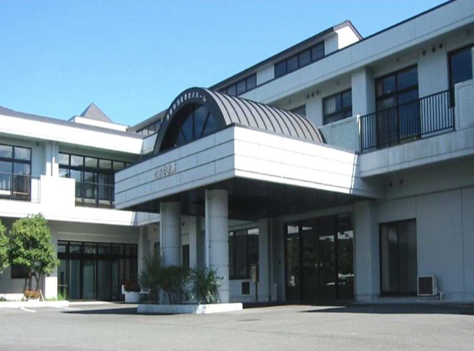
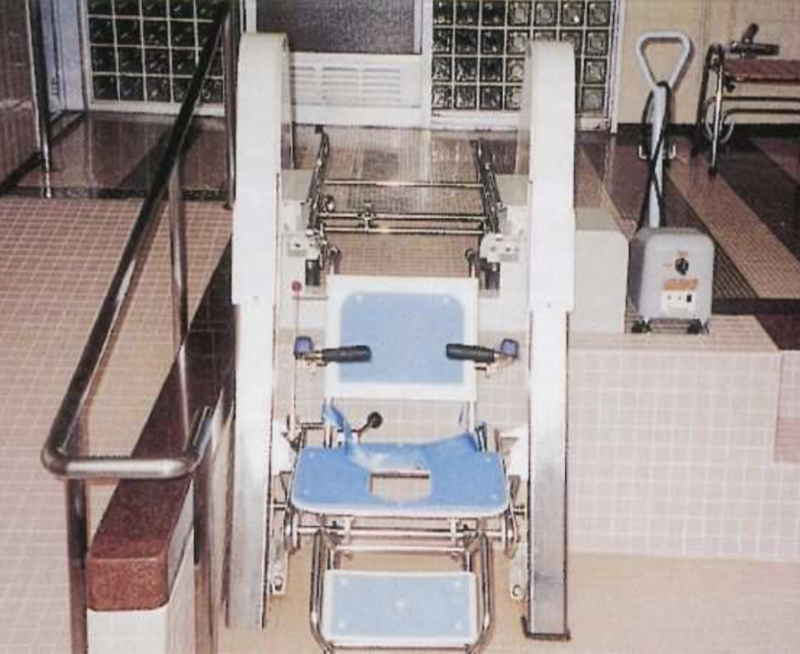

志摩特別養護老人ホーム
ともやま苑
親譲りの無鉄砲で小供の時から損ばかりしている。
小学校に居る時分学校の二階から飛び降りて一週間ほど腰を抜かした事がある。
小学校に居る時分学校の二階から飛び降りて一週間ほど腰を抜かした事がある。

施設に入所されている方に、入浴、食事、排泄の介護等を行います。安心して日常生活を送れるよう、専門スタッフが24時間体制でサポートいたします。
ご家族の病気・冠婚葬祭・出張等のため、またはご家族の精神的・身体的な負担の軽減を図るために、短期間入所して日常生活全般の介護を受けることができるサービスです。
施設図

居室（多床室）
2~4人部屋となります

居室（個室）
1人部屋となります
デイルーム（談話室）
みなさんと食事をされたり寛いでいただく場所となります


機械浴（特別浴槽）
寝たきりの方が寝ながら洗身できる浴槽です
機械浴（一般浴槽）
歩行ができる方や車椅子利用の方が座って洗身できる浴槽です

※ 季節や行事により多少異なる場合があります。
※ 必要時にバイタルチェック（体温・血圧・脈拍・酸素飽和度等）を行なっています。
各季節をタップすると写真が見れます
| 名称 | 志摩特別養護老人ホーム ともやま苑 |
|---|---|
| 所在地 | 〒517-0603 三重県志摩市大王町波切2233-2 Googleマップを開く |
| 電話番号 | 0599-73-8181 |
| FAX番号 | 0599-72-5611 |
| 事業の種類（定員） |
●地域密着型特別養護老人ホーム（29名） ●短期入所生活介護（併設型1名、空床型29名） |
| 主たる対象者 | 介護認定を受けた65歳以上かつ要介護度3以上の方 |
| 開所日・時間 | 年中無休（受付窓口は8:30～17:30） ※年末年始及びお盆を除きます。 |